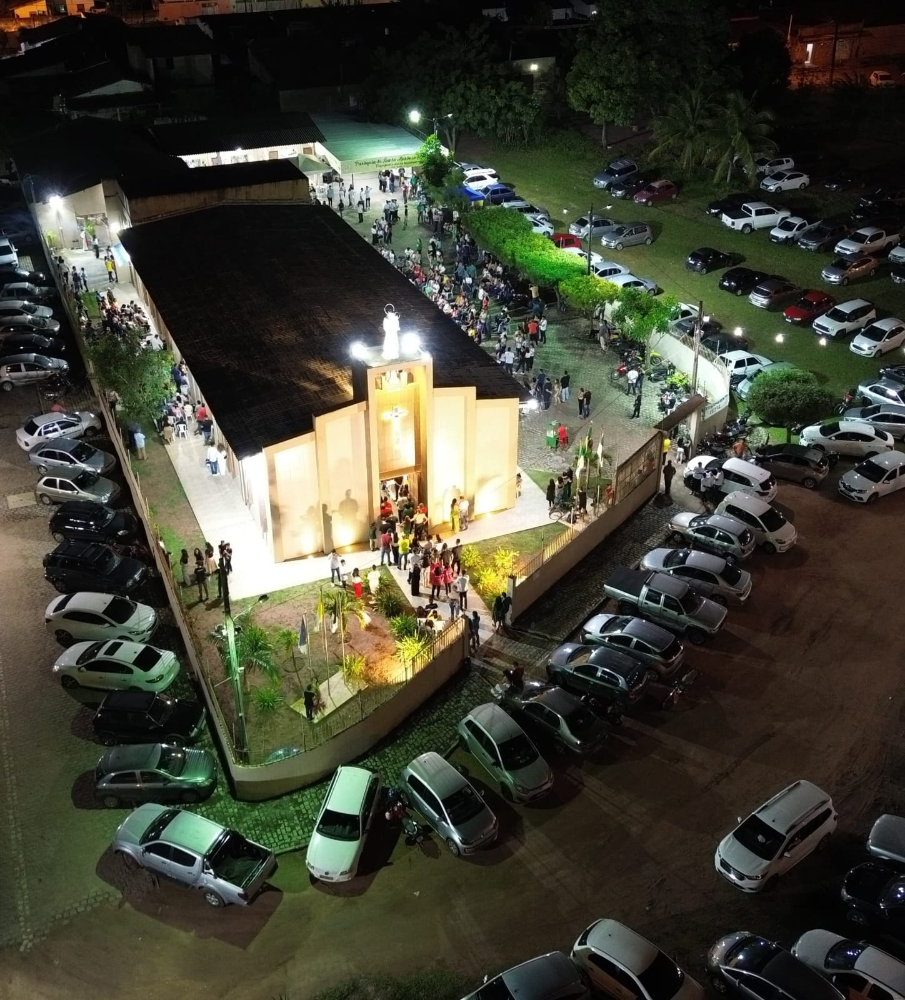
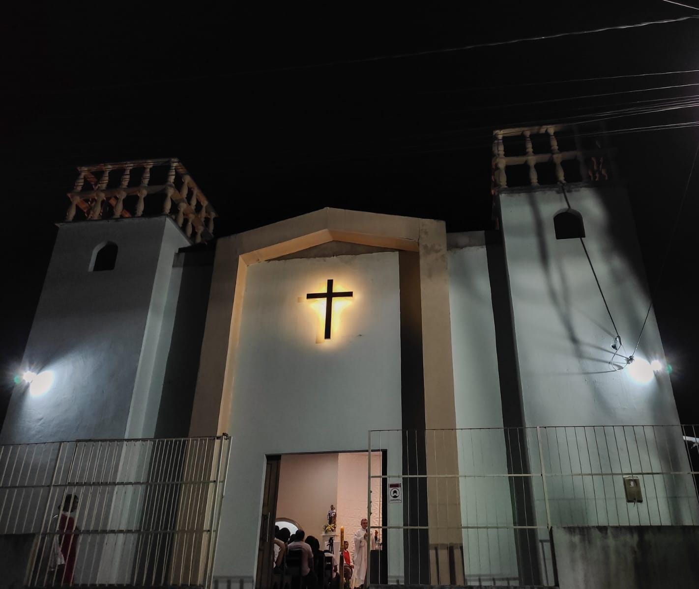
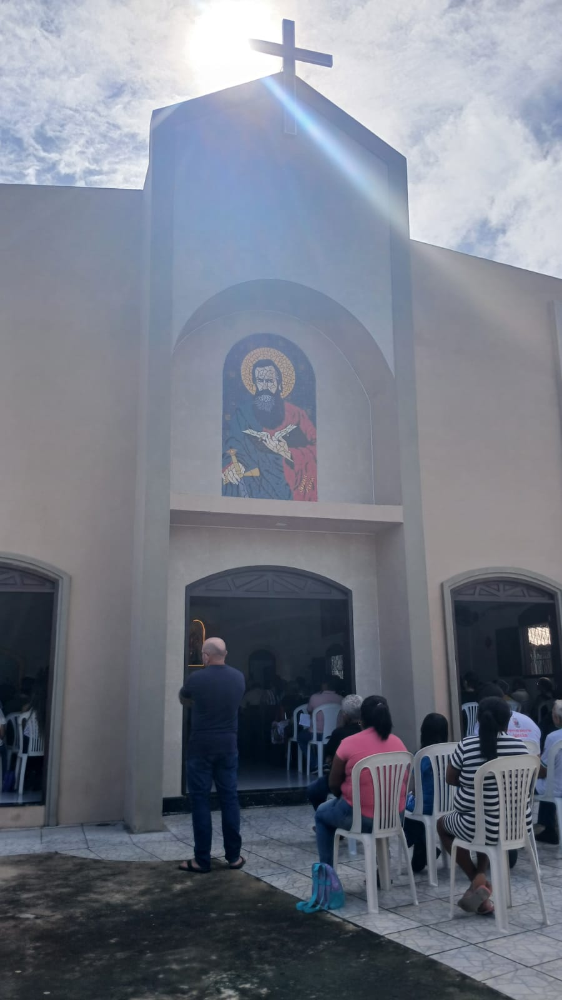
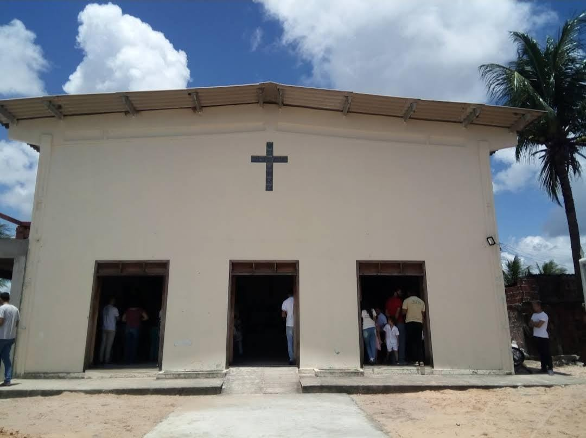
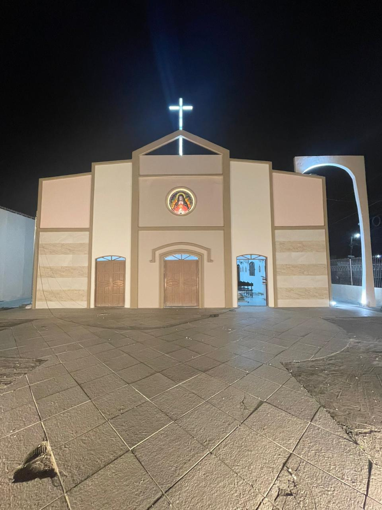

Conj. Parque dos Coqueiros, Natal - RN

Conj. Nova Zelândia, São Gonçalo do Amarante - RN

Conj. Olho d'água do Carrilho, Natal - RN

Conj. Vale Dourado, Natal - RN

Conj. Vale Dourado, Natal - RN